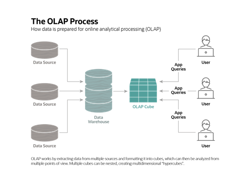

El procesamiento analítico en línea (online analytical processing, OLAP) es un método informático que permite a los usuarios extraer y consultar datos de manera fácil y selectiva para analizarlos desde diferentes puntos de vista. Las consultas de inteligencia empresarial OLAP a menudo ayudan en el análisis de tendencias, informes financieros, previsión de ventas, presupuestos y otros propósitos de planificación.
El software OLAP luego localiza la intersección de dimensiones, como todos los
productos vendidos en la región oriental por encima de un precio determinado
durante un período de tiempo determinado, y los muestra. El resultado es la
"medida"; cada cubo OLAP tiene al menos una o quizás cientos de medidas, que se
derivan de la información almacenada en tablas de hechos en el almacén de datos.
Es un software para realizar análisis multidimensionales a altas velocidades en grandes volúmenes de datos de un almacén de datos La mayoría de los datos comerciales tienen varias dimensiones: varias categorías en las que se desglosan los datos para su presentación, seguimiento o análisis. Por ejemplo, las cifras de ventas pueden tener varias dimensiones relacionadas con la ubicación (región, país, estado/provincia, tienda), tiempo (año, mes, semana, día), producto (ropa, hombres/mujeres/niños, marca, tipo) y más.
